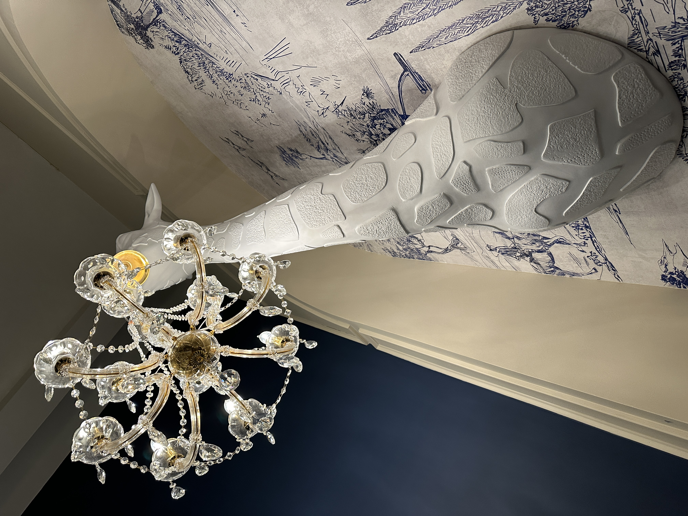
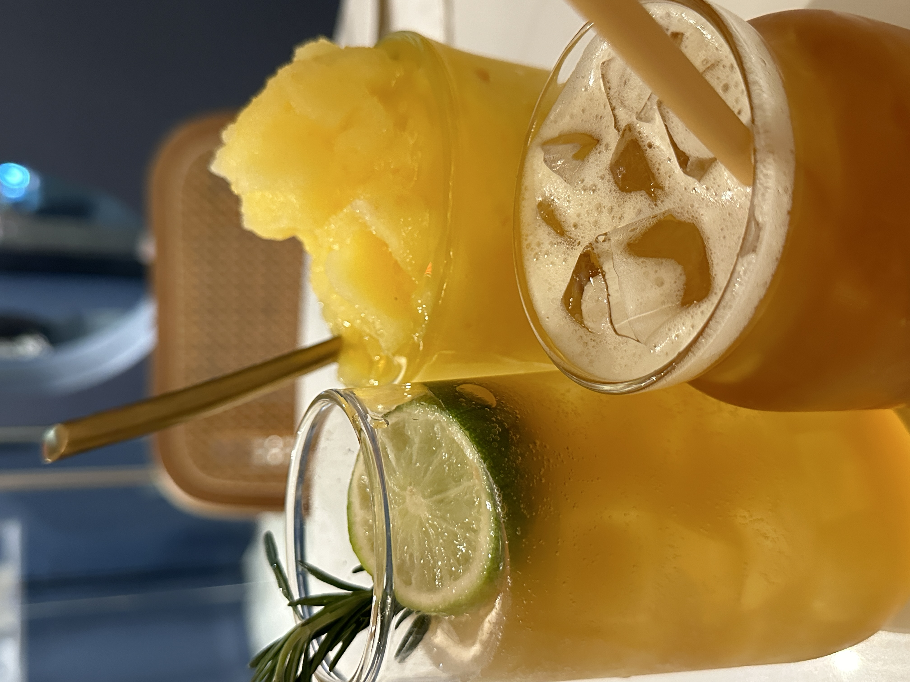
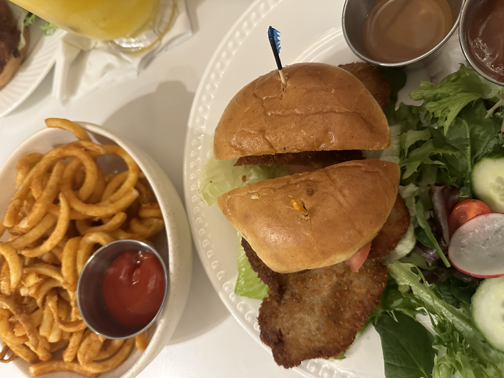

Recommendations
One thing I like to do whenever I am with my favorite people is cafe hopping. I enjoy trying going to different cafe and try out their menu. Almost every cafe has different approach on aesthetics and menu. So it is very interesting to see different themes people turn their cafe into.
Prince Tea House
Prince Tea House is very popular for its approach in Afternoon Tea, mirroring the French culture. Well known for their high quality tea and delicious desserts, this is a very popular cafe with many locations in NYC.
  Check them out here!